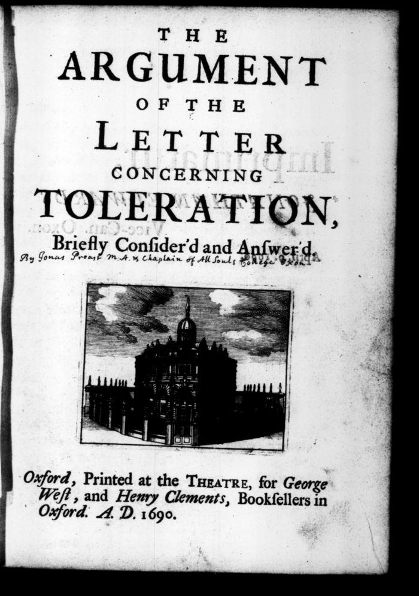
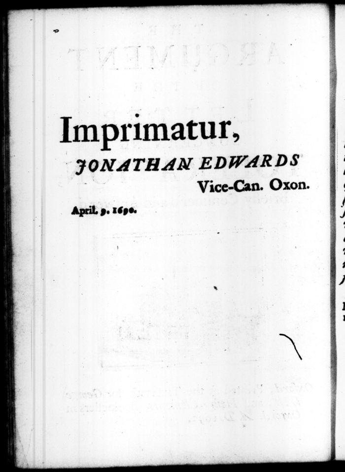
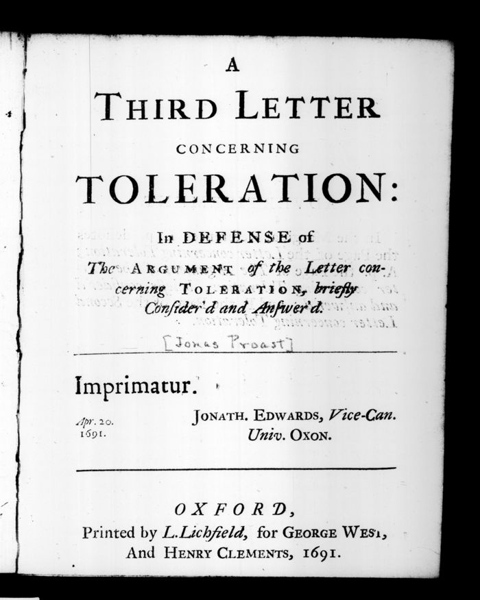

“Printed at the Theatre” (1690) and “Imprimatur … Univ. Oxon.” (1691)
Title pages: 1690, scan n0 (imprimatur n1); 1691, scan n2.



The 1690 pamphlet is addressed “To my very Worthy Friend Mr. ——” and dated 27 March 1690: “I have, in compliance with your Request, consider’d the Letter concerning Toleration” (scan n2, read at preview size).
Further down the rabbit hole
Sources that Lecky cites in the notes next to the ones that cite this page.
- Annuaire des Deux Mondes, 1857–1858Exiled from Sweden in the 1850s for becoming Catholics
- Coleridge, Notes on English Divines“Most dearly do I love Jeremy Taylor”: Coleridge on a broken principle
- Taylor, A Discourse of the Liberty of ProphesyingLecky quotes Taylor accurately on water and Spirit
- Chillingworth, The Religion of ProtestantsWhy an honest error needs no pardon
- Aquinas, Summa theologiae, II-IIHeretics and forgers; the usurper’s subjects
- Augustine, Letters 93 and 185“My opinion at first was that no one should be coerced”: how Augustine changed his mind


Backlinks
Every place in Rationalism in Europe that links to this page (generated automatically when the site is built).
- Chapter IV, Part II: note 97